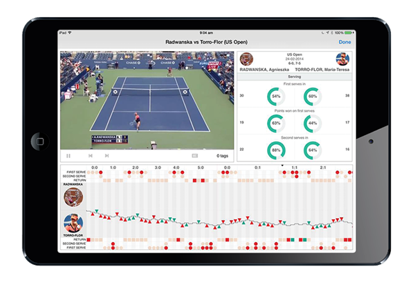
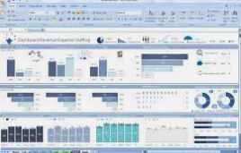
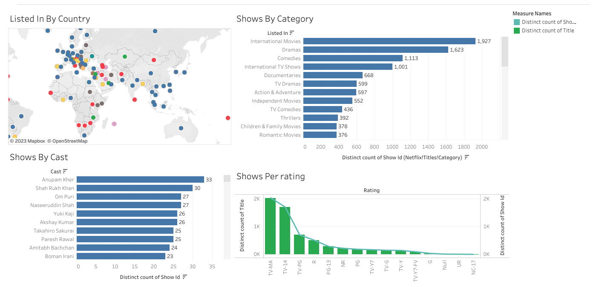
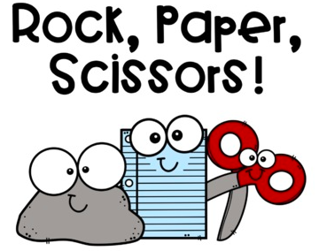
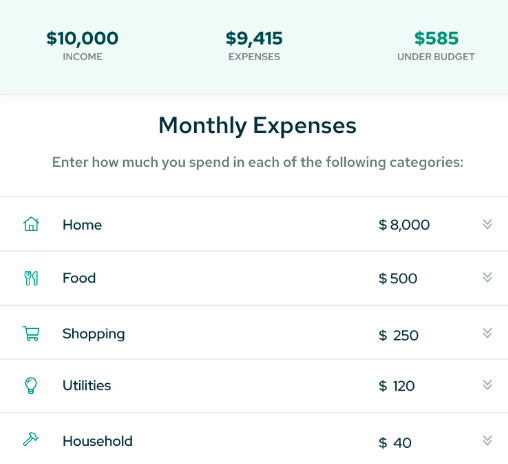
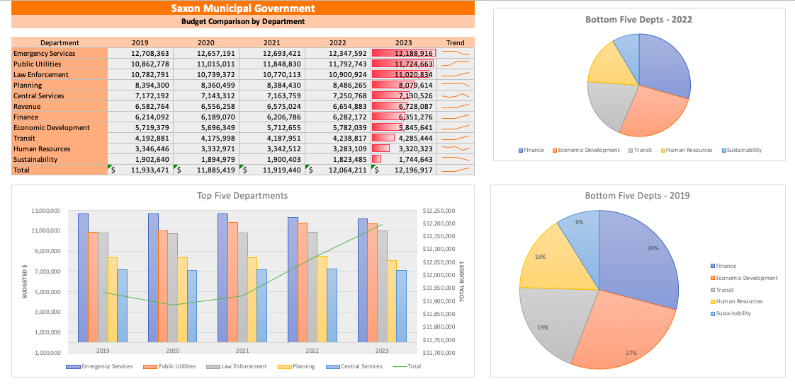
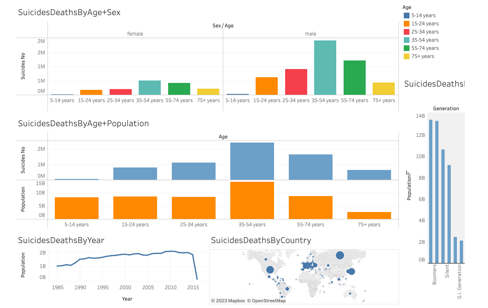
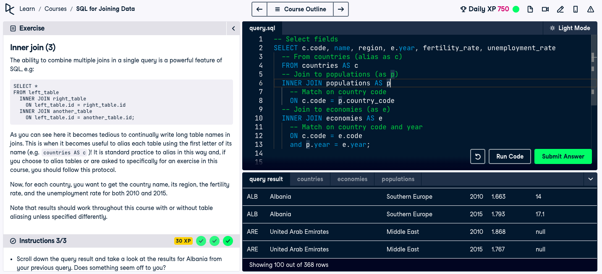

In this project I took sample tennis data and extract meaning reporting data.
Employed a range of SQL queries to retrieve relevant data from the database.
Utilized MySQL Workbench as the primary tool for executing these queries.

In this project I built excel dashboard for a bike sales.
Performed data cleansing and review, eliminating duplicate entries, updating column descriptions and cells, and removing irrelevant data.
Generated reports on bike sales based on average income, commuting distance categorized by mileage ranges, education level per rider, and age brackets per rider.
Developed a user-friendly slider for effortless data manipulation, ensuring easy accessibility and frequent updates for business purposes.

In this project I built a tableau dashboard for Netflix movies and shows, by Country, Rating, Cast, Catergory.
Analyzed a dataset of 8,807 rows containing movie and TV show information from various directors spanning two years.
Generated eight distinct charts based on different criteria such as category type, year of release, cast, director, statistics, country, and rating. These charts aided in determining the shows with the highest number of shows per cast members, directors, and categories, as well as the annual production count.
International movies surpassed dramas with a count of 1,927 compared to 1,623, while the United States took the lead with a total of 176,031 minutes.
TV-MA (mature content) rating showed a higher prevalence with 2,014 instances, as opposed to TV-14 (unsuitable for viewers under 14 years old) with 1,693 occurrences.

In this project I built a simple rock, paper, scissor game.
Developed a Python game that can be played by a single player, incorporating user input.
Provided a set of instructions, allowed the player to choose their character, determined the sequence of plays, identified the winner and loser, and offered the choice to play again.
Utilized the random.choice function to generate the computer's choice in the game.

In this project I built a budget calculator with input from the user.
Created a budget calculator in Python that prompts the user for input options and computes the overall budget.
Verifies that the input consists of positive numbers.

In this project I build a budget breakdown for a fictitious governmental entity.

In this project I built a tableau dashboard for suicide deaths from 1985 to 2016 by country, sex, age and population.

In this project I took sample country data and extract meaning reporting data.
Employed a range of SQL queries from DataCamp to retrieve relevant data from the database.